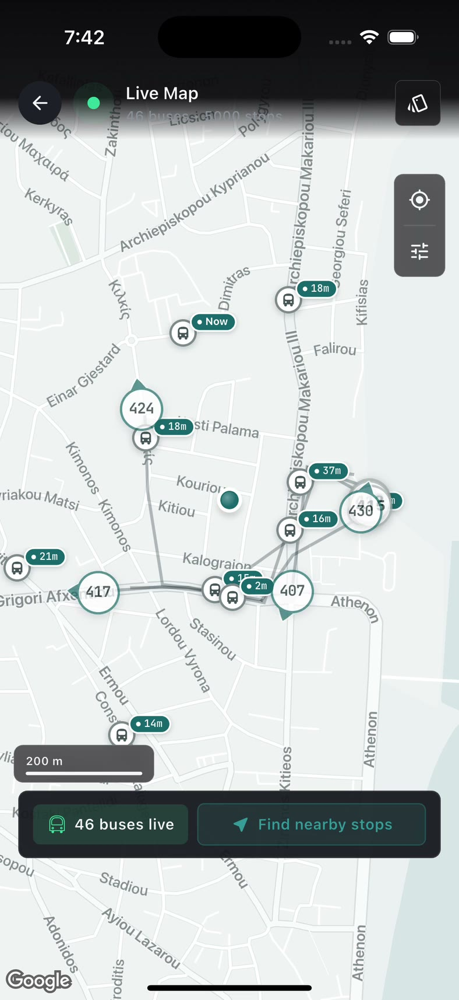
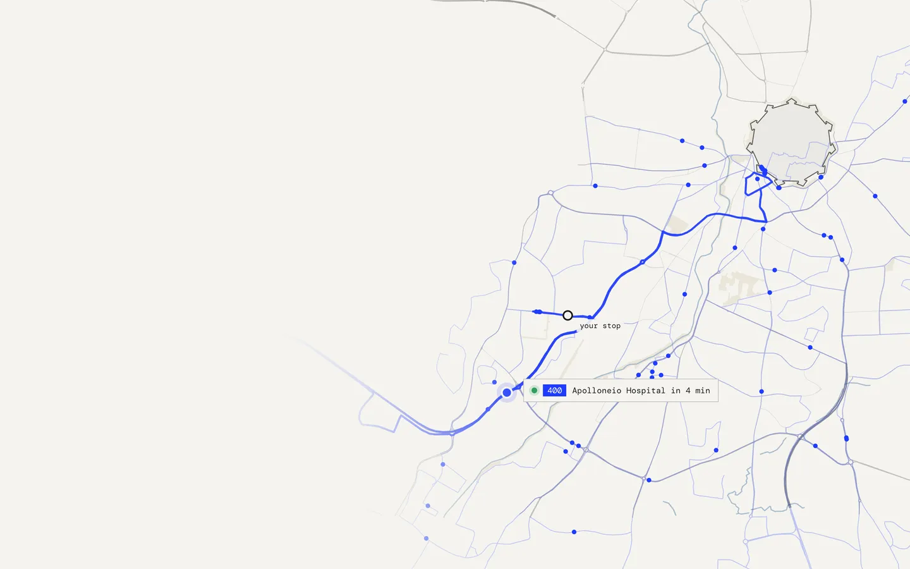

I build software for real places.
Embedded systems and the apps around them, in Nicosia. This is one of them: every bus in Cyprus, drawn where it really is.
Cinna · Ludi · Augur · Aristophanes · Wiseprint · Ρίζα
I / VI · Cinna
Where the bus
actually is.
Live · every bus in Cyprus, every 15 s · iOS on TestFlight
The real app · recorded 27 Oct 2026 · 96 s at ×8


I build software for real places.
Embedded systems and the apps around them, in Nicosia. This is one of them: every bus in Cyprus, drawn where it really is.
Cinna · Ludi · Augur · Aristophanes · Wiseprint · Ρίζα
recorded 06:08 · Mon 26 Oct · © OpenStreetMap contributors
I / VI · Cinna
Where the bus actually is.
Live · every bus in Cyprus, every 15 s · iOS on TestFlight
The other five
- II · LudiFootball pitch booking and matchmaking for Cyprus.
- III · AugurA relay module that knows where it is.
- IV · AristophanesAn end-to-end platform for theatre, from solo practice to running a production.
- V · WiseprintA cost-plus pricing engine that became a print shop's working tool.
- VI · ΡίζαA free dictionary of Modern Greek where every definition cites its source.